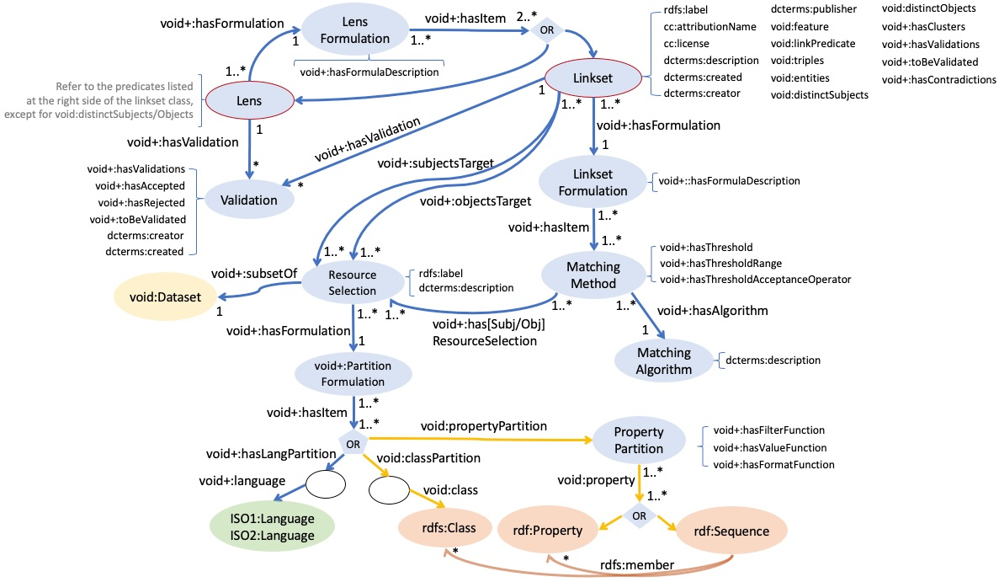

3. ONTOLOGY  ¶
¶
This section presents an Ontology meant for describing in detail processes of generation and validation of links, so that decisions made such as resource selections and matching options are made explicit. Those processes are implemented in the Lenticular Lens tool and result in the creation of Linksets or Lenses according to a specification.
3.1 Model¶
The proposed ontology reuses (part of) the [VoID] vocabulary, as depicted in Fig 2.1 highlighting in yellow the use of [VoID] terms and in blue the new terminology. The [VoID] vocabulary provides means to describe datasets and linksets, but not the details of how they were generated, nor it provides means to describe Lenses or Validations. Moreover, their concept of linkset is not quite the same as ours. Those issues are further discussed in this section.
In the attempt to describe the proposed ontology, we dissect Fig 2.1 into four parts.
- First, a Resource Selection is elucidated.
- Second, we go about describing a Matching Formulation and show how it connects with a Resource Selection.
- The third step highlights that the description of a Linkset metadata involves specifying the Resource Selections used at the source and target positions of an entity matching process, the Matching Formulation, eventual validations plus statistics and authority information.
- The fourth and final step focuses on the annotation of a Lens by describing the combination of one or more Linksets and/or Lenses.

Fig 1: The Lenticular Lens Ontology
3.1.1 Resource Selection¶
This step concerns the selection of the resources under scrutiny, that can potentially end up co-referent entities across or within datasources during an entity matching process. To therefore perform a matching, one first needs not only to select datasource(s) but also restrict which resources will undergo the matching. The first way of doing so is by applying a type (class) restriction. This is mandatory in the Lenticular Lens process as matching algorithms are not fully automated. Down this line, further restrictions can be applied by forcing the value of a number of properties to lie within a certain range. A Resource Selection is thereby, the annotation of such process.
In the ontology excerpt depicted in Figure 2 we propose the entity type Resource Selection, which is also a void:Dataset that is a void:subset of one or more void:Dataset(s). It can also have further restrictions defined as void:classPartion and/or void:propertyPartition. While a void:classPartion solely consists in specifying the type of entity under scrutiny, the void:propertyPartition entails a little more. It consists in specifying a property or property path and a restriction that the selected property should undergo for the selection of the right entities for the further down the road entity matching process. Those restrictions can be combined using a Formula Description given by ll:hasFormulaDescription.
 Fig 2: Selecting a matching resource
Fig 2: Selecting a matching resource Example 1: Resource Selection
In this example,
- the entity resource:ResourceSelection-2 is a ll:ResourceSelection (and a void:Dataset) subset of resource:index_op_doopregister_raw_20190830 and also a collection (partition) of entities of type pnv:PersonName where each entity passed the filter test of (1) name in the English language which appears without trailing dots
"%...%"@enand (2) birthdates within the interval [1600, 1699]. - the entity resource:ResourceSelection-2 lists all three entities of type ll:PropertyConstraint and elaborates on the logic expression that binds all restrictions. For example, the property restriction described by resource:PropertyConstraint-PHce78383e3ff6e9dd73b6 documents that, applying the date function
"minimal_date"@enover dates in the format the"YYYY-MM-DD"@enwith the year restriction of 1600 makes sure that only persons born on 1600 onwards are admitted.
Turtle Syntax
When ever a literal in RDF syntax conatins quote or new line characters, the litreal
should be in a three quote syntax ("...""@en). In the example below, we deliberately
wrote the literal value of ll:hasFormulaDescription is in
a single quote ("...""@en) instead of a triple quote ("""%...%="""@en) as the syntax
highliter is somewhat buggy.
### RESOURCE 2
resource:ResourceSelection-2
a void:dataset, ll:ResourceSelection ;
rdfs:label "Baptisms in the 17th Century"@en ;
void:subset resource:index_op_doopregister_raw_20190830 ;
void:classPartition [ void:class pnv:PersonName ] ;
void:propertyPartition resource:PropertyConstraint-PHea6802ef02f99a848859 ;
void:propertyPartition resource:PropertyConstraint-PHce78383e3ff6e9dd73b6 ;
void:propertyPartition resource:PropertyConstraint-PH2580641bbdd572759cb9 ;
ll:hasFormulaDescription "
resource:PropertyConstraint-PHce78383e3ff6e9dd73b6
AND resource:PropertyConstraint-PH2580641bbdd572759cb9
AND (resource:PropertyConstraint-PHea6802ef02f99a848859)"@en .
resource:PropertyConstraint-PHea6802ef02f99a848859
a ll:PropertyConstraint ;
void:property
[
a rdfs:Sequence ;
rdf:_1 pnv:literalName
] ;
ll:hasFilterFunction "not_ilike"@en ;
ll:hasValueFunction "%...%"@en .
resource:PropertyConstraint-PHce78383e3ff6e9dd73b6
a ll:PropertyConstraint ;
void:property
[
a rdfs:Sequence ;
rdf:_1 saa:isInRecord ;
rdf:_2 saa:IndexOpDoopregisters ;
rdf:_3 saa:birthDate
] ;
ll:hasFilterFunction "minimal_date"@en ;
ll:hasValueFunction 1600 ;
ll:hasFormatFunction "YYYY-MM-DD"@en .
resource:PropertyConstraint-PH2580641bbdd572759cb9
a ll:PropertyConstraint ;
void:property
[
a rdfs:Sequence ;
rdf:_1 saa:isInRecord ;
rdf:_2 saa:IndexOpDoopregisters ;
rdf:_3 saa:birthDate
] ;
ll:hasFilterFunction "maximum_date"@en ;
ll:hasValueFunction "1699"@en ;
ll:hasFormatFunction "YYYY-MM-DD"@en .
3.1.2 Matching Formulation¶
For simple matching problems, finding co-referents can be done using a single matching algorithm (matcher). However, time and again the data reality often imposes the use of more than one matcher instead. In this latter scenario, clearly reporting on how these matchers work together for detecting co-referents is essential. A Matching Formulation entity is a resource for just doing the aforementioned, as depicted in Figure 3.
Once resources of type Resource Restriction are created, one can go ahead and used them for specifying the restricted collections to be used in a particular Matching Method, which also specifies the Matching Algorithm and its parameters such as threshold, range and operrator. In the end, all Matching Methods used in a matching process are documented in the Matching Formulation resource as well as how they bind together in a logic expression given by the predicate ll:hasFormulaDescription.

Fig 3: Specifying the way in which methods are logically combined
Example 2: Linkset Logic Expression
In Example 2.8, the resource:PHb99da2ecd91ad533af65 is a ll:MatchingFormulation listing eight ll:MatchingMethods used for creating a linkset. They their logic combination is described as ll:hasFormulaDescription. Among the ll:MatchingMethods, the resource:TIME_DELTA-PHfdc744f6bd0ced4e283a is the only method detailes in this example, documenting the four ll:ResourceSelections involved, as well as the chosen ll:MatchingAlgorithm, namely resource:TIME_DELTA, besides the threshold (20), threshold-unit (“Year”@en), threshold-operator (>=) and threshold-range “â„•” of the matching method.
Turtle Syntax
When ever a literal in RDF syntax conatins quote or new line characters, the litreal
should be in a three quote syntax ("...""@en). In the example below, we deliberately
wrote the literal value of ll:hasFormulaDescription is in
a single quote ("...""@en) instead of a triple quote ("""%...%="""@en) as the syntax
highliter is somewhat buggy.
################################################################################
# LINKSET LOGIC EXPRESSION #
################################################################################
resource:PHb99da2ecd91ad533af65
a ll:MatchingFormulation ;
ll:hasMethod resource:TIME_DELTA-PHfdc744f6bd0ced4e283a ;
ll:hasMethod resource:Exact-PH6491d1db6855098a70be ;
ll:hasMethod resource:LL_SOUNDEX-PH0ad3ad579d7a29347753 ;
ll:hasMethod resource:BLOOTHOOFT_REDUCT-PH10433274b57dafdd1335 ;
ll:hasMethod resource:Exact-PH4d4187a08c3ba4c1cf0d ;
ll:hasMethod resource:TIME_DELTA-PHe40547b9d3b6381347b4 ;
ll:hasMethod resource:LEVENSHTEIN_APPROX-PH10f4c17bbf933cae647f ;
ll:hasMethod resource:BLOOTHOOFT_REDUCT-PH98a9575087817b951447 ;
ll:hasFormulaDescription "
resource:TIME_DELTA-PHe40547b9d3b6381347b4
AND resource:TIME_DELTA-PHfdc744f6bd0ced4e283a
AND (
resource:Exact-PH4d4187a08c3ba4c1cf0d
OR (
resource:BLOOTHOOFT_REDUCT-PH98a9575087817b951447
AND resource:BLOOTHOOFT_REDUCT-PH10433274b57dafdd1335)
OR (
resource:Exact-PH6491d1db6855098a70be
AND (resource:LL_SOUNDEX-PH0ad3ad579d7a29347753
AND resource:LEVENSHTEIN_APPROX-PH10f4c17bbf933cae647f
)
)
)"@en .
################################################################################
# METHOD SIGNATURES #
################################################################################
### METHOD SPECIFICATIONS TIME_DELTA
resource:TIME_DELTA-PHe40547b9d3b6381347b4
a ll:MatchingMethod ;
ll:hasAlgorithm resource:TIME_DELTA ;
ll:hasThresholdRange "ℕ" ;
### SOURCE PREDICATE CONFIGURATION
ll:hasSubjResourceSelection resource:ResourceSelection-PHbe38976fdf884b6c4a8e ;
ll:hasSubjResourceSelection resource:ResourceSelection-PHe8fa664d04ad00aaa697 ;
### TARGET PREDICATE CONFIGURATION
ll:hasObjResourceSelection resource:ResourceSelection-PH71818c17d54a8fbec22b ;
ll:hasObjResourceSelection resource:ResourceSelection-PHc8a3c6e494d230b79a6b .
•••
3.1.3 Linkset¶
This step documents a linkset metadata including WHAT - HOW - WHEN - WHO and other processes explaining the aboutness of links. The Matching Formulation specifies HOW entities are matched and Resource Selection specifies WHAT to match as subject and object targets. Also some statistic on the matching results can be reported such as the number of links found, the numbers of entities linked, WHO created the linkset and WHEN. Finally, a Validation entity can also be specified, comprising metadata with statitics and auhtority information on the validation process. Observe that when one or more validations are provided, statistics on this matter can be included in the linkset metadata, including eventual contradictions if one validation says a link is correct while another says it is not.
As discussed earlier in this section, according to the [VoID] documentation, the void:Linkset definition expects as datasources exactly one source and one target, different from each other. This means it is more restrictive than the ll:Linkset here proposed, since the latter also expects a linkset to contain links within a datasource or across more than two. Therefore, we do not directly reuse that concept (and its correspoding properties void:subjects/objectsTarget). Naturally, one could still use void:Linkset for other purposes, but at the risk of abusing the VoID vocabulary if its instances do not really fit the required restrictions. Moreover, a void:Linkset (i.e. a resource representing a linkset’s metadata) is also not an instance of ll:Linkset since the later requires the description of the processes underlying the creation of the links, which is not the case for the first.
Fig 4: Specifying the linkset’s context
Example 3: A linkset annotation
### LINKSET 15
linkset:15
a ll:Linkset ;
void:feature format:Turtle ;
cc:attributionName "LenticularLens"@en ;
cc:license <http://purl.org/NET/rdflicense/W3C1.0> ;
dcterms:created "2020-09-26T09:37:23.933624"^^<http://www.w3.org/2001/XMLSchema#dateTime> ;
dcterms:creator "AL IDRISSOU" ;
dcterms:creator "GoldenAgents" ;
void:linkPredicate owl:sameAs ;
rdfs:label "Linkset 9"@en ;
dcterms:description "LINSET-15-9: Test Baptism against Marriage and burial with several nested methods "@en ;
### VOID LINKSET STATS
void:entities 12580 ;
### LENTICULAR LENS LINKSET STATS
### SOURCE ENTITY TYPE SELECTION(S)
ll:subjectsTarget resource:ResourceSelection-2 ;
### TARGET ENTITY TYPE SELECTION(S)
ll:objectsTarget resource:ResourceSelection-1 ;
ll:objectsTarget resource:ResourceSelection-3 ;
### THE LOGIC FORMULA
ll:hasLogicFormulation resource:PHb6e5e320dc08d7d9dd98 .
3.1.4 Lens¶
Another process relevant to document is the creation of Lenses. In short, a lens is the result of a set-like operation over one or more Linkset and or Lens. Therefore, the entity Lens documents them as ll:hasTarget

Fig 5: Specifying the linkset’s context
Example 4: A lens annotation
3.2 OWL Ontology  ¶
¶
3.2.1 Classes¶
Class |
Purpose |
|---|---|
| ll:ResourceSelection | A ResourceSelection is a collection of resources stemmed from the same dataset and partitioned on the basis of a given class and optionally a number of predicates having there respective predicate-value(s) enforced within a pre-defined range. |
| ll:PropertyConstraint | A PropertyConstraint is a resource that maps an explicitly defined property-path to a value-range constraint. In this way, resources that are described with the mapped property-path are to pass the value-range constraint test to be selected for further processing. Such a property-path can be (i) a sequence of properties only or (ii) a more precise path where a class is associated to a property in the following pattern: . |
| ll:MatchingMethod | A MatchingMethod is a resource that makes explicit all pre-requisites of a matching algorithm including the conditions in which the algorithm is to accept a discovered link (threshold). |
| ll:MatchingFormulation | A MatchingFormulation is a resource that makes explicit all matching-methods involved in the creation of a Linkset and how the methods logically work jointly. |
| ll:Linkset | In [VoID], a Linkset is a collection of RDF links between two datasets where all subjects stem from one dataset and all objects from the other dataset. In here, we alleviate such strict restriction on the number of linked datasets to be one, two or more. Therefore, here a linkset is a collection of RDF links between dataset(s), using the same link predicate (regardless of the link being an equality predicate or not). This predicate is called the linktype of the linkset. |
| ll:Lens | Content-wise, a Lens is a type of RDF linkset (in the sense that it is a collection of links sharing the same linktype) also involving one, two or more datasets. However, context-wise, it differs from a linkset as it is generated using different process (set-like link manipulation operators such as Union, Intersection, Difference or Transitivity) as compared to how a linkset comes about (matching algorithms). |
3.2.2 Properties¶
ResourceSelection Property |
Purpose |
|---|---|
| rdfs:label | |
| void:subset | |
| void:classPartition | |
| void:propertyPartition | |
| ll:hasFormulaDescription |
MatchingMethod Property |
Purpose |
|---|---|
| ll:hasAlgorithm | |
| ll:hasThresholdRange | |
| ll:hasSubjResourceSelection | |
| ll:hasObjResourceSelection |
PropertyConstraint Property |
Purpose |
|---|---|
| void:property | |
| ll:hasFilterFunction | |
| ll:hasValueFunction | |
| ll:hasFormatFunction |
MatchingFormulation Property |
Purpose |
|---|---|
| ll:hasMethod | |
| ll:hasFormulaDescription |
Linkset Property |
Purpose |
|---|---|
| cc:attributionName | |
| cc:license | |
| dcterms:created | |
| dcterms:creator | |
| dcterms:description | |
| ll:subjectsTarget | |
| ll:objectsTarget | |
| ll:hasLogicFormulation |
Lens Property |
Purpose |
|---|---|
| cc:attributionName | |
| cc:license | |
| dcterms:created | |
| dcterms:creator | |
| dcterms:description | |
| ll:subjectsTarget | |
| ll:objectsTarget | |
| ll:target | |
| ll:hasLogicFormulation |